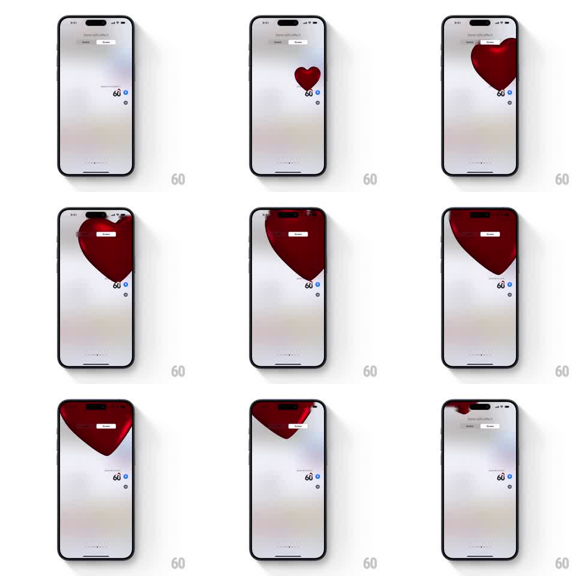

Media
Frame-by-frame

Rebuild this animation 1:1: Apple Messages' Love screen effect - a glossy red heart balloon inflates from the sent bubble, grows huge, and floats up and off the screen with a gentle drift.

Rebuild this animation 1:1: Apple Messages' Love screen effect - a glossy red heart balloon inflates from the sent bubble, grows huge, and floats up and off the screen with a gentle drift. ## Integration Integration: stack-agnostic spec - springs given as stiffness/damping, timed motions as duration + curve; map every value to your framework and animation library of choice. ## Scene The Messages "Send with effect" preview on the bright conversation: the sent bubble sits at the right. A deep red 3D heart balloon emerges from the bubble, inflates until it dominates the upper half of the screen, then rises and drifts left, exiting past the top corner. ## Motion spec Pattern: heart balloon inflate and float, ~4s total. - The heart appears at the bubble small (scale 0.2) and inflates with a soft overshoot (spring stiffness 200 damping 12) to near screen width over 900ms. - It is a lit 3D form: specular highlight on the upper left lobe, soft shading toward the edges, slight wobble as it inflates (plus/minus 3 degrees rotation settling out). - Once full size, it rises (ease-out, ~2s to exit) while drifting left and rocking gently (plus/minus 4 degrees, 1.5s period), like a released balloon. - It exits fully past the top-left; the conversation stays bright throughout. ## Calibration - The heart grows from the bubble's exact position - it reads as the message transforming. - The float accelerates slightly as it rises, like buoyancy. ## Reduced motion The heart fades in at full size and fades out rising. ## Don't miss - One heart only, large and glossy - not a shower of small hearts. - The wobble settles before the rise begins: inflate, then float.